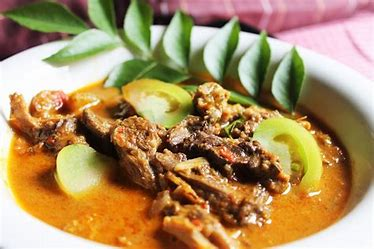

Resep Gulai Kambing

Gulai Kambing merupakan hidangan khas Indonesia yang kaya rempah dan bumbu. Berikut resep gulai kambing yang dapat anda buat sendiri di rumah :
Bahan - Bahan :
- 500 gram daging kambing (di potong-potong)
- 2 sendok makan minyak kelapa atau minyak sayur
- 2 lembar daun salam
- 2 batang serai, memarkan
- 3 cm lengkuas, memarkan
- 4 lembar daun jeruk
- 400 ml santan kelapa, encerkan dengan 200 ml air
- 200 ml santan kelapa kental
- garam secukupnya
- gula secukupnya
Bumbu Halus :
- 5 siung bawang merah
- 4 siuang bawang putih
- 3 butir kemiri sangrai
- 2 cm kunyit
- 3 cm jahe
- 1 sendok teh ketumbar
- 1 sendok teh merica butiran
- 5 buah cabai merah
Cara Membuat Gulai Kambing :
- Panaskan minyak dalam wajan, tumis bumbu halus hingga harum dan matang
- Masukkan serai, lengkuas, daun salam, dan daun jeruk ke dalam tumisan bumbu. Aduk hingga rata
- Tambahkan potongan daging kambing. Aduk rata hingga daging berubah warna
- Tuangkan santan encer ke dalam tumisan. Aduk rata dan biarkan mendidih sambil diaduk sesekali
- Setelah santan encer mendidih, tambahkan santan kental. Aduk rata dan biarkan mendidih kembali
- Tambahkan garam dan gula secukupnya sesuai selera. Aduk dan cicipi rasa, sesuaikan bumbu jika diperlukan
- Biarkan gulai kambing mendidih dan masak hingga daging empuk dan bumbu meresap
- Angkat dan sajikan gulai kambing dalam mangkuk